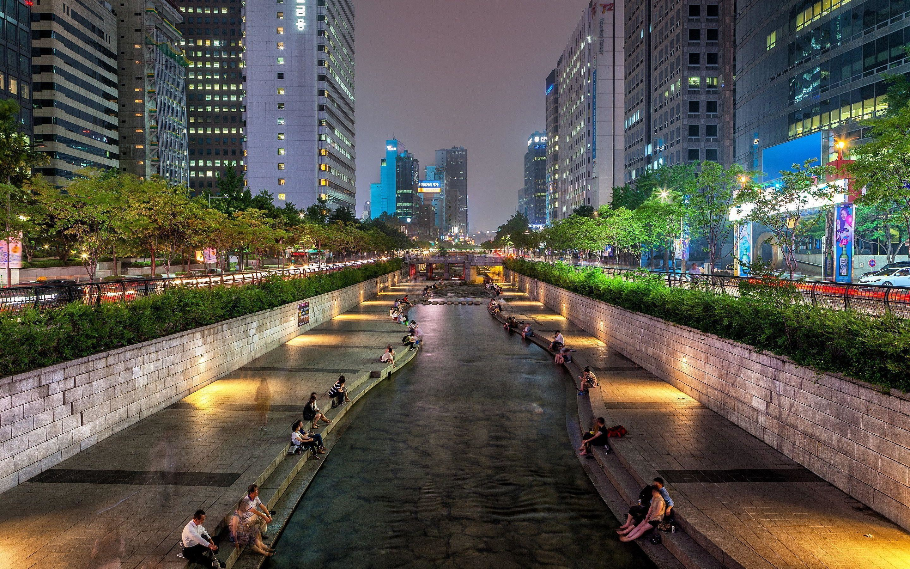
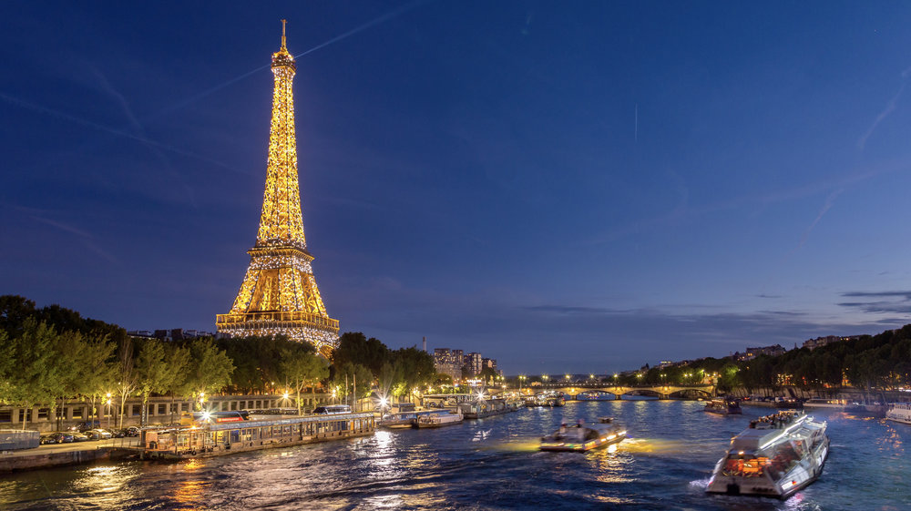

1 / 3

Seoul
2 / 3

Paris
3 / 3

NewYork
서울특별시(서울特別市)는 대한민국의 수도이자 최대 도시이다. 백제의 첫 수도인 위례성이었고, 고려 때는 남경(南京)이었으며, 조선의 수도가 된 이후로 현재까지 대한민국 정치·경제·사회·문화의 중심지 역할을 하고 있다. 중앙으로 한강이 흐르고, 북한산, 관악산, 도봉산, 불암산, 인능산, 인왕산, 청계산 등의 여러 산들로 둘러싸인 분지 지형의 도시이다. 동서 간의 거리는 36.78 km, 남북 간의 거리는 30.3 km이며, 넓이는 605.25 km²이다. 면적은 대한민국 전 국토의 0.6%를 차지하지만, 약 977만 명의 인구가 살고 있어 인구밀도가 높다. 시청 소재지는 중구이며, 25개의 자치구로 이루어져 있다. 1986년 아시안 게임, 1988년 하계 올림픽, 2010년 서울 G20 정상회의를 개최한 국제적인 도시이다. 서울의 GDP는 세계 4위이다.[2][3]
파리(프랑스어: Paris, 문화어: 빠히)는 프랑스의 수도로, 프랑스 북부 일드프랑스 지방의 중앙에 있다. 센 강 중류에 있으며, 면적은 105km2. 인구는 2010년 기준으로 224만 명이다. 파리의 행정 구역은 1~20구로 나뉘어 있다. 센 강을 기준으로 우안(rive droite)과 좌안(rive gauche)으로 나뉜다. 우안은 전통적으로 정치, 경제 기능이 집중된 곳으로 정부 기관, 사무실, 백화점, 주요 기차역 등이 집중해 있다. 반면 좌안은 교육 기능을 중심으로 발전해왔다. 좌안의 라틴 지구에는 소르본을 비롯한 대학 및 그랑제콜, 연구소 등이 집중해 있다.
뉴욕(영어: New York City 뉴욕 시티[*]; City of New York 시티 오브 뉴욕[*]; NYC,[6] 문화어: 뉴요크)은 미국 북동부, 뉴욕주의 남쪽 끝에 있는 도시이다. 미국에서 가장 인구가 많은 도시로, 세계에서 가장 인구가 많은 도시 중 하나이다.[7][8][9] 세계적인 대도시인 뉴욕은[10] 상업, 금융, 미디어, 예술, 패션, 연구, 기술, 교육, 엔터테인먼트 등 많은 분야에 걸쳐 큰 영향을 끼치고 있으며, 도쿄, 런던과 함께 세계 3대 도시이자 세계의 문화 수도로 불리기도 한다.[11] 이 외에도 뉴욕은 국제 외교에서 중요한 도시이며,[12] 유엔 본부가 있다. 뉴욕 항은 세계에서 가장 큰 자연 항구 가운데 하나이다.[13] 뉴욕은 맨해튼, 브루클린, 퀸스, 브롱스, 스태튼아일랜드와 같은 다섯 개의 자치구로 나뉘어 있다. 이 자치구들은 각각 독립되어 있었다가 1898년 뉴욕에 합병되었다.[14][15] 뉴욕의 인구는 2011년을 기준으로 8,244,910명으로[16], 305 제곱마일(790km2)에 걸쳐 분산되어 있다.[17][18] 또한, 뉴욕은 미국에서 인구 밀도가 가장 높은 도시 중 하나이다. 800개가 넘는 언어가 사용되며, 세계에서 가장 다양한 언어가 공존하는 도시이다.[19] 뉴욕 대도시권에는 6,720 제곱마일(17,400km2)에 걸쳐 1,890만 명의 인구가 살고 있다.[20][21] 이 지역은 1624년 네덜란드 공화국의 이주민들이 무역항으로 설립하였고, 1626년 네덜란드인들이 뉴암스테르담이라는 지명을 붙였다.[22] 1664년에는 영국인들이 강제 점령해 도시와 그 주변 지역을 통치했고,[23][24] 찰스 2세가 동생 요크 공(제임스 2세)에게 땅을 주면서 뉴욕이라고 불리기 시작하였다.[25] 뉴욕은 1789년부터 1791년까지 미국의 공식적인 수도였다.[26] 1790년부터는 미국에서 가장 큰 도시로 성장했다.[27] 이후 19세기 말부터 20세기 초까지 수백만의 이민자들이 배를 타고 뉴욕으로 이주해 왔다.[28] 뉴욕에는 5번로를 포함한 거리, 자유의 여신상을 포함한 랜드마크가 많이 있으며, 연간 5천만 명의 관광객이 방문한다.[29][30][31] 타임스 스퀘어는 '세계의 교차로'(The Crossroads of the World)라고 불리고 있다.[32][33][34][35][36] 타임스 스퀘어 부근에서는 브로드웨이 연극이 상연되며,[37] 뉴욕은 엔터테인먼트 산업의 중심지로 일컬어진다.[38] 엠파이어 스테이트 빌딩, 록펠러센터, 크라이슬러 빌딩을 포함한 초고층 건물, 센트럴 파크를 포함한 공원, 브루클린 다리 등을 포함한 다리도 많이 있다.[39] 경제 수도로도 불리는 뉴욕에는[40] 월 가가 있으며, 뉴욕 증권거래소(NYSE)와 NASDAQ이 이 거리에 있다.[41] 맨해튼의 부동산 시장은 세계에서 가장 비싸다.[42] 뉴욕 지하철은 세계 최대의 지하철망 중 하나이며, 컬럼비아 대학교, 뉴욕 대학교를 포함한 수많은 대학교도 뉴욕에 있다.[43]